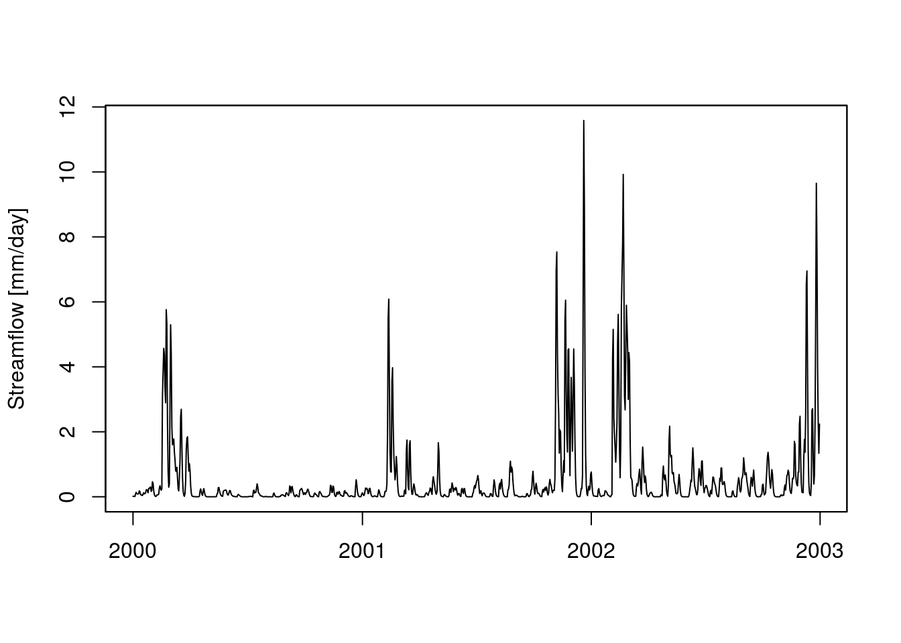

fuse: an R package implementing the Framework for Understanding Structural Errors


The fuse modelling framework takes as input rainfall and potential evapotranspiration time series (areal averages over the river catchment area) and returns a simulated time series of river discharges. It can be used to understand the variability of expected hydrological responses based on model structures.
This package is an implementation of the framework for hydrological modelling FUSE described in Clark et al. (2008) and based on the Fortran code provided by M. Clark in 2011. The package consists of two modules: Soil Moisture Accounting module (fusesma.sim) and Gamma routing module (fuserouting.sim). It also contains default parameter ranges (fusesma.ranges and fuserouting.ranges) and three data objects: fuse_hydrological_timeseries (sample input dataset), parameters (sample parameters) and modlist (list of FUSE model structures).
Dependencies
The fuse package, as well as the examples in the vignette, depend on a number of CRAN packages. Check for missing dependencies and install them:
packs <- c("dplyr", "zoo", "tgp", "stats", "utils", "BH", "Rcpp", "testthat",
"qualV", "devtools")
new.packages <- packs[!(packs %in% installed.packages()[, "Package"])]
if(length(new.packages)) install.packages(new.packages)Installation
You can install this package from Github with devtools:
devtools::install_github("cvitolo/fuse")Load the package:
library("fuse")Usage
The simplest way to test fuse is to use the dummy data provided with this package, sample the parameter range using the built-in function generateParameters() and run the model with 1 model structure (e.g. TOPMODEL):
# Load the dummy data
data(fuse_hydrological_timeseries)
# Sample the parameter range
parameters <- generateParameters(1)
# Run fuse
streamflow <- fuse(DATA = fuse_hydrological_timeseries,
mid = 60, # Model structure = TOPMODEL
deltim = 1, # Daily time step
ParameterSet = parameters)
plot(streamflow, xlab = "", ylab = "Streamflow [mm/day]")
For details and more complex examples (e.g. multi-model ensemble), please refer to the vignette.
Fortran users are advised to refer to the latest version of fuse available here.
Meta
- Code contributions are welcome! Please note that this project is released with a Contributor Code of Conduct. By participating in this project you agree to abide by its terms.
- Please report any issues or bugs.
- License: GPL-3
- Get citation information for the
fusepackage in R doingcitation(package = 'fuse')